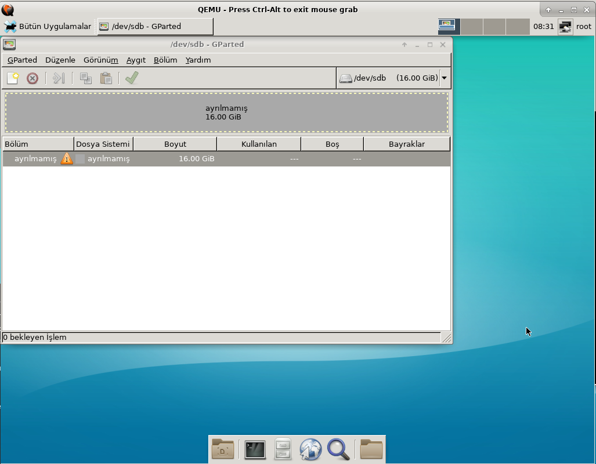
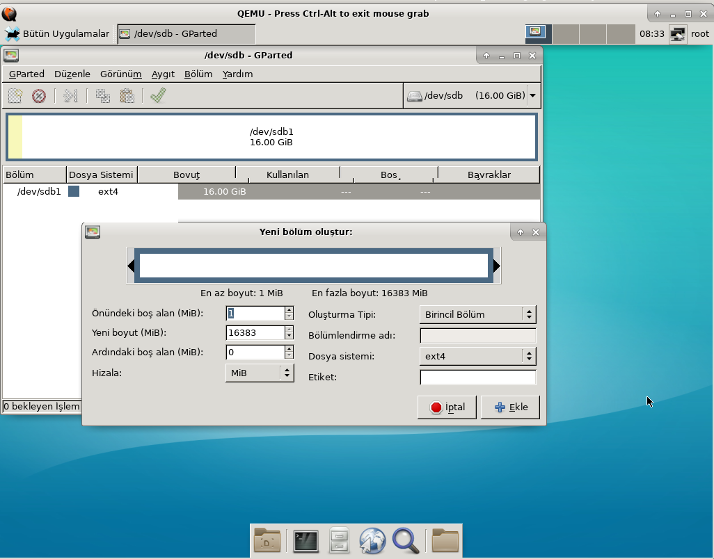

Çalışan iso'dan direk sistemi hedef disk bölümünüze kurabilirsiniz.Ayrıca o an çalışan iso üzerinde yaptığınız ayarlamalar da kaybolmayacak ve o şekilde kurulacaktır.
Yeni bir terminal açıp ve aşağıdaki yönergeleri takip ederek sistem kurulumunu yapabilirsiniz.Sanal kurulum Qemu'da gerçekleştirilmiştir.
1-Sanal disk (16gb) oluşturmak
$ qemu-img create -f raw sanal.img 16G
2-Sistemin çalışan iso ve sanal bellek ile açılması
$ qemu-system-x86_64 -m 1024 --enable-kvm milis-xfce4-20160514.iso -hdb sanal.imgAşağıdaki komutlar ve resimler sanal ortamda yapılanlardır.
3a-gparted programını kullanarak sdb üzerinde ext4 dosya sistemi oluşturulur.
Aygıt-->Yeni Bölüm Oluştur "msdos" seçili halde onaylanır ve sistem formatlanmaya hazırdır.
Yapılan değişiklikler yukarıdan yeşil tikle onaylanır ve sdb1 bölümünün oluştuğu görülür.
3b-bolumu /mnt altına bagla
$ mount /dev/sdb1 /mnt
4-mevcut dosya sistemini hedefe kopyala
$ cp -axvnu / /mnt
5-initramfs ( baslatici) oluştur
$ chroot /mnt dracut --no-hostonly --add-drivers "ahci" -f /boot/initramfs
6-gerekli grub ayarlarını yap.
$ grub-install --boot-directory=/mnt/boot /dev/sdb
$ grub-mkconfig -o /mnt/boot/grub/grub.cfg
7-grubda sanal imaj için değişiklik yapılması./mnt/boot/grub/grub.cfg açılır ve ilgili satırlar(68,69,70) resimdeki gibi düzeltilir.
8-sanaldan çıkılıp milis kurulan imaj çalıştırılır.
$ qemu-system-x86_64 -m 1024 --enable-kvm -hda sanal.img
{kind=link}
{kind=link}
{kind=link}
{kind=link}
{kind=link}
{kind=link}
{kind=link}